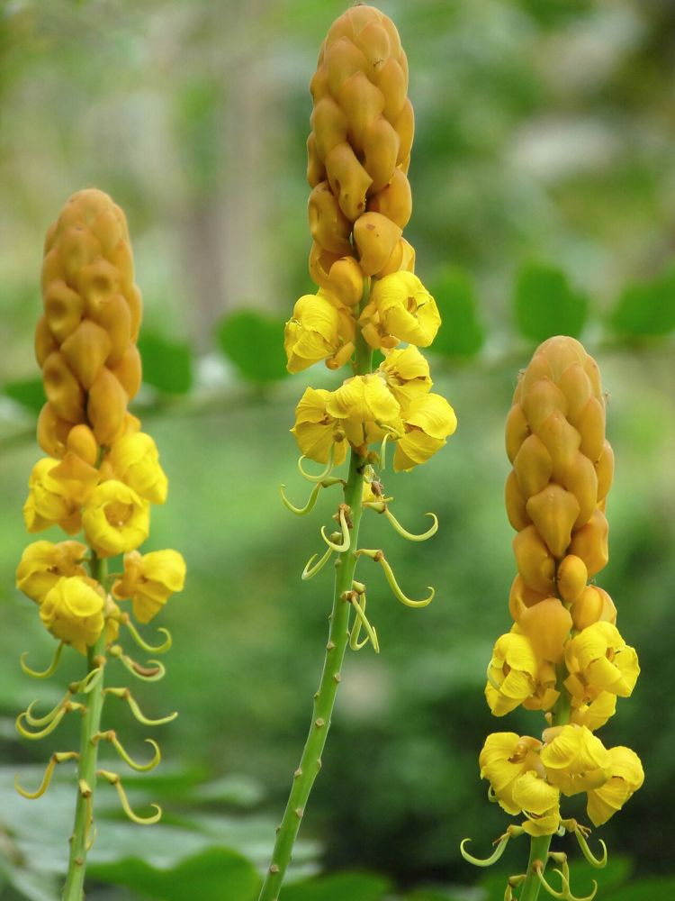

🌿 சித்த மருத்துவக் குறிப்பு:
சீமை அகத்தி இலைகள், படர்தாமரை (Ringworm) போன்ற தோல் பூஞ்சை நோய்களுக்கான சித்த மருந்துகளில் பயன்படுகின்றன. அதனால் இதற்கு "வண்டுக்கொல்லி" என்றும் பெயர்.
🎯 முக்கியப் பயன்: பூஞ்சைத் தொற்று (Fungal Infection) நோய்களுக்கான சித்த மருந்துகளில் பயன்படுகிறது.
⚠️ இலை, விதைகளை உட்கொண்டால் கடும் வயிற்றுப்போக்கு ஏற்படும் – உள்ளுக்குச் சாப்பிடக் கூடாது.
உங்களுக்குத் தெரியுமா?
1மெழுகுவர்த்திச் செடி
இதன் மஞ்சள் பூங்கொத்துகள் நிமிர்ந்து எரியும் மெழுகுவர்த்தி போலத் தோன்றுவதால் ஆங்கிலத்தில் “Candle Bush” என்கின்றனர்.
2கடல் கடந்து வந்த செடி
அமெரிக்கக் கண்டத்திலிருந்து நம் நாட்டுக்கு வந்ததால் "சீமை" (வெளிநாட்டு) அகத்தி என்று பெயர் பெற்றது.
3இரவில் உறங்கும் இலைகள்
மாலை இருட்டியதும் இதன் இலைகள் ஜோடி ஜோடியாக மடிந்து மூடிக்கொள்ளும்; காலையில் மீண்டும் விரியும்.
இந்தத் தகவல் பயனுள்ளதாக இருந்ததா?